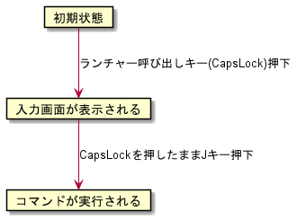

ホットキーの種別
ホットキーの種別として以下の3つを選択できる
アクティブ時のみ有効アクティブ時のみ有効(SandS)常駐時いつでも有効
アクティブ時のみ有効とアクティブ時のみ有効(SandS)は入力画面が表示されているときだけ機能する。
一方、常駐時いつでも有効は入力画面が表示されていないときでも機能する。
SandSについて
アクティブ時のみ有効(SandS)のSandSは「Space and Shift」の略で、単体でキーを押したときは文字キー(→Space)として機能し、
他のキーと同時押ししたときは修飾キー(→Shift)として機能する、という概念のこと
ランチャー呼び出しキーの修飾キーとSandSの修飾キーを同じキーとして設定することにより、スムーズにコマンドを呼び出すことができる
例:
ランチャー呼び出しのホットキーをCapsLockにして、コマンドのホットキーをCapsLock+Jに設定していたとすると、以下のような動きになる

結果として、他アプリとのキー割り当ての干渉をあまり気にすることなく、グローバルホットキー的な機能が実現できる
ホットキーの種別の比較
種別ごとに実現している仕組みが異なる。
種別 |
実現方式 |
メリット |
デメリット |
|---|---|---|---|
|
キーアクセラレータ |
他アプリに干渉しない |
まずアクティブにする(入力画面を表示する)必要がある |
|
キーフックによる独自実装 |
SandSの修飾キーとランチャー呼び出しキーの組み合わせにより、スムーズな運指が実現できる |
まずアクティブにする(入力画面を表示する)必要がある |
|
グローバルホットキー |
いつでも呼び出せる |
登録したキーを他アプリで使えなくなってしまう |
常駐時いつでも有効はシステムのホットキーに登録するため、登録したキーを使って、いつでも呼び出せる一方で、ほかのアプリ内においてそのキーを使うことができなくなる
なお、常駐時いつでも有効で設定した場合でも、本アプリが一般権限で動作している状況において、管理者権限で動作しているアプリが前面にある状況ではホットキーは機能しない。